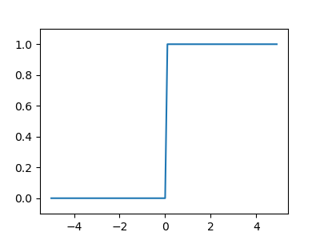
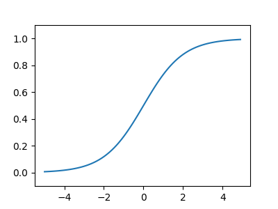
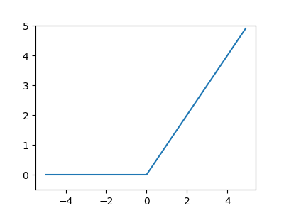

Activation Function
Table of Contents

1. 簡介
Activation function有許多中譯方式：
- 啟動函數
- 激勵函數
- 激發函數
- 激活函數
Activation function是神經網絡中極其重要的概念。它們決定了某個神經元是否被activate，這個神經元接受到的信息是否是有用的，是否該留下或者是該拋棄。 Activation) function的形式如下1：
- 在神經元裡定義一些權重(weight)，經過計算之後，判斷結果是否超過一個閾值(threshold)，如果超過，神經元輸出為 1；反之，則輸出 0。
- 如果不用Activation function，每一層output都是上層input的線性函數，無論神經網絡有多少層，輸出都是輸入的線性組合。
- 加入非線性的function就能改變線性問題
2. 重要性
由沒有Activation Function的perceptron所組成的神網網路都只是linear model，linear model無法處理複雜的問題。
思考下方堆疊兩層感知器的例子(這裡我們捨棄偏權值b，使問題單純化)：

Figure 1: Stacked perceptrons
其中 \[ y_1 = w_1^1x_1 + w_2^1x_2 \\ y_2 = w_3^1x_1 + w_4^1x_2 \\ \hat{y} = w_1^2y_1 + w_2^2y_2 \] 若將\(y_1\)與\(y_2\)代入\(\hat{y}\)，可以發現仍然是原始數據的線性組合，代表即使堆疊多層的感知器時，若沒有使用激活函數，本質上可以被單層感知器取代，如下2： \[\hat{y} = w_1^2y_1 + w_2^2y_2 = (w_1^1w_1^2 + w_2^1x_2^2)x_1 + (w_3^1w_1^2 + w_4^1x_2^2)x_2\]
激活函數最重要的功能在於引入神經網路非線性，因為若未加入激活函數，卷積層與全連接層只是單純的線性運算，只是將上層的數據經過線性地組合成下層數據而已，對於線性不可分的問題仍然是無解的3。
舉個常見的例子，如果輸入的資料如下圖(這是互斥或閘XOR的例子)，圈圈與叉叉分別是兩種不同的類別，我們的目標就是利用一條直線將兩類別切開，但實際上根本無法利用一條直線切割開，因此需要對輸入資料做特徵轉換(feature transform)，將其從x1-x2特徵平面映射其他線性可分的特徵平面(可單純利用一條直線切分)3。
3. 類型
3.1. Step function
Step function，若輸入超過 0，則輸出 1；若輪入小於等於 0，則輸出 0，如公式\eqref{orgc7f12e0}所示，其函數圖形則如圖2所示。
\begin{equation} \label{orgc7f12e0} h(x) = \begin{cases} 1 & \text{if } x > 0 \\ 0 & \text{if } x\leq 0 \end{cases} \end{equation}1: import numpy as np 2: import matplotlib.pylab as plt 3: 4: def step_function(x): 5: return np.array(x>0, dtype=np.int) 6: 7: x = np.arange(-5.0, 5.0, 0.1) 8: y = step_function(x) 9: plt.figure(figsize=(4,3)) 10: plt.plot(x, y) 11: plt.ylim(-0.1, 1.1) 12: plt.savefig("images/stepFuncPlot.png") 13: return "images/stepFuncPlot.png"

Figure 2: 階梯函數圖
- 為什麼第5行(np.array(x>0, dtype=np.int))這樣寫會變成0/1
- 當調整參數時，節點輸出的值在 0 和 1 之間躍遷，對調整參數造成很大不便。
3.2. Sigmoid
公式\eqref{orgf6c62cd}即為 sigmoid 函數(sigmoid function)，其中的\(exp(-x)\)代表\(e^{-x}\)，\(e\)為納皮爾常數(Napier’s constant)2.71828…的實數。
\begin{equation} \label{orgf6c62cd} h(x) = \frac{1}{1+exp(-x)} = \frac{1}{1+e^{-x}} \end{equation}sigmoid 函數的 python 實作如下所述，而其圖形結果為平滑曲線(圖3)，針對輸入產生連續性的輸出，但仍與階梯函數相同，以 0 為界線，這種平滑度對於神經網路有相當重要的意義。此外，step function只能回傳 0 或 1，而 sigmoid 函數可以回傳實數。
1: import numpy as np 2: import matplotlib.pylab as plt 3: def sigmoid(x): 4: return 1 / (1 + np.exp(-x)) 5: x = np.arange(-5.0, 5.0, 0.1) 6: y = sigmoid(x) 7: print(y) 8: plt.figure(figsize=(4,3)) 9: plt.plot(x, y) 10: plt.ylim(-0.1, 1.1) 11: plt.savefig("images/sigmoidplot2.png") 12: return "images/sigmoidplot2.png"

Figure 3: sigmoid 函數圖
- 非線性功能
- 輸出：（0,1）
- 處理極端值
- 常用於隱藏層和輸出層
- 常用於二元分類
- 梯度消失問題
3.3. ReLU
神經網路感知器使用的活化函數多為非線性函數，如階梯函數與 sigmoid 函數，其主要原因在於，若在神經網路中使用線性函數，則不論加深多少層，這些函數都能合併為一個單一函數。例如，一個以\(h(x)=cx\)為活化函數的三層網路，其執行結果便相當於\(y(x)=h(h(h(x)))\)，亦即，其執行網果就如同一個以\(y(h)=ax\)為活化函數的一層網路，其中\(a=c^{3}\)。
雖然 sigmoid 函數很早就應用於神經網路中，但最近較常使用的為 ReLU (Rectified Linear Unit)函數，若輸入超過 0，則直接輸出；若輪入小於 0，則輸出 0，如公式\eqref{org87ce88c}所示，其函數圖形則如圖4所示。
\begin{equation} \label{org87ce88c} h(x) = \begin{cases} x & \text{if } x > 0 \\ 0 & \text{if } x\leq 0 \end{cases} \end{equation}or \[h(x) = max(0,x)\]
1: import numpy as np 2: import matplotlib.pylab as plt 3: def relu(x): 4: return np.maximum(0, x) 5: x = np.arange(-5.0, 5.0, 0.1) 6: y = relu(x) 7: print(y) 8: plt.figure(figsize=(4,3)) 9: plt.plot(x, y) 10: plt.ylim(-0.5, 5) 11: plt.savefig("images/ReLUPlot.png") 12: #return "ReLUPlot.png"

Figure 4: ReLU 函數圖
- 非線性功能
- 輸出範圍：（0，\(\infty\)）
- 捨棄一些信息
- 常用於隱藏層
- 梯度爆炸問題
3.4. Softmax
3.4.1. 特色
softmaxe 的輸出為介於 0 到 1 間的實數，此外，其輸出總和為 1，這個性質使的 softmax 函數的輸出也可解釋為「機率」。例如，前節程式碼的輸出結果為[0.01821127 0.24519181 0.73659691]，從以機率的角度我們可以說：分類的結果有 1.8%的機率為第 0 類；有 24.52%的機率為第 1 類；有 73.66%的機率為第 2 類。換言之，使用 softmax 函數可以針對問題提出對應的機率。 softmax 函數的另一個特色是其輸出結果仍保持與輸入訊息一致的大小關係，這是因為惷數函數\(y=exp(x)\)為單週函數。一般而言，神經網路會把輸出最大神經元的類別當作辨識結果，然而，因為 softmax 不影響大小順序，所以一般會省略 softmax 函數。
輸出層的節點數量取決於要解決的問題，例如，如果要解決的問題為「判斷一個手寫數字的結果」，則輸出層會有 10 個節點(分別代表 0~9)，而輸出訊息最大的結點則為最有可能的答案類別。
3.4.2. 公式
3.4.3. 實作
1: #python code for softmax funtion 2: import numpy as np 3: def softmax(a): 4: exp_a = np.exp(a) 5: #exp_a = np.exp(a - np.max(a)) 6: sum_exp_a = np.sum(exp_a) 7: y = exp_a / sum_exp_a 8: return(y) 9: a = np.array([0.3, 2.9, 4.0]) 10: print(softmax(a))
[0.01821127 0.24519181 0.73659691]